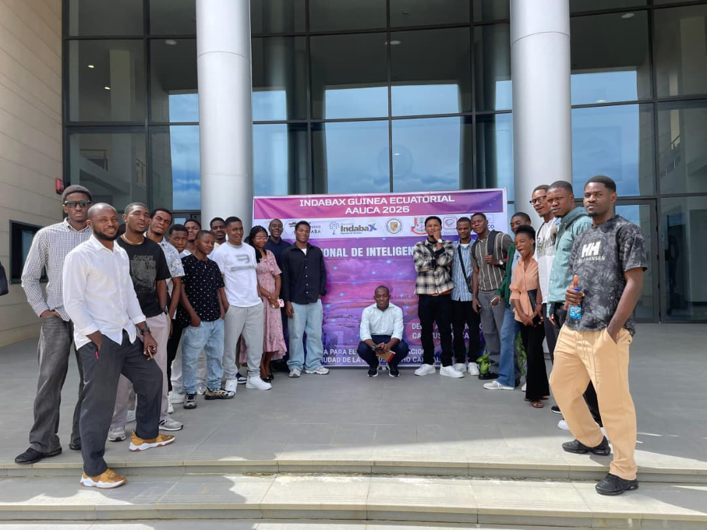

Académico
Nuevo ciclo formativo en Ciberseguridad
10 de junio de 2026
El INSTTIC lanza un nuevo programa especializado para formar expertos en seguridad informática, con prácticas en empresas líderes del sector.
Leer más